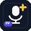

KBLab Whisper
Svenska Whisper-modeller från Kungliga biblioteket, med CUDA-stöd för snabbare lokal transkribering.

freewispr-swedishHåll en tangent, prata och få texten där markören redan står. freewispr-swedish kör KBLab Whisper lokalt och kan, om du vill, granska texten med GitHub Models efteråt.
Windows-buildar publiceras som GitHub Actions-artifacts tills första stabila release finns.
Funktioner
Appen är liten nog att leva i systemfacket men robust nog för mail, editorer, webbläsare, terminaler och interna verktyg.
Svenska Whisper-modeller från Kungliga biblioteket, med CUDA-stöd för snabbare lokal transkribering.
Lyssnarrutan kan följa muspekaren över flera skärmar eller ligga fast på huvudskärmen.
Texten stannar i urklipp även om automatisk paste inte fungerar i en terminal.
Rätta vanliga felhörningar, namn och facktermer en gång och återanvänd lokalt.
Eftergranska text via GitHub Models och se direkt om den är lokal, LLM-granskad eller LLM-polerad.
Ny ikon, favicon och social preview som hör till den svenska forken, inte originalprojektet.
Integritet
Standardläget skickar inte ljud eller transkriberad text till en LLM. LLM-granskning är separat och tydligt markerad i indikatorn.
Ljud spelas in, resamplas och transkriberas på din Windows-dator. Modeller och ordlistor ligger i användarmappen.
Kom igång
Ingen tung installation krävs för att testa en build. Packa upp, starta och diktera.
Hämta senaste Actions-artifact från GitHub. Stabil release publiceras när versionen är redo.
Kör freewispr-swedish.exe och välj mikrofon, modell och indikatorläge.
Håll Ctrl+Space, prata, släpp. Texten hamnar där du arbetar.
Byggen skapas automatiskt på GitHub och innehåller en körbar Windows-mapp.
Actions-artifacts kan kräva att du är inloggad på GitHub.